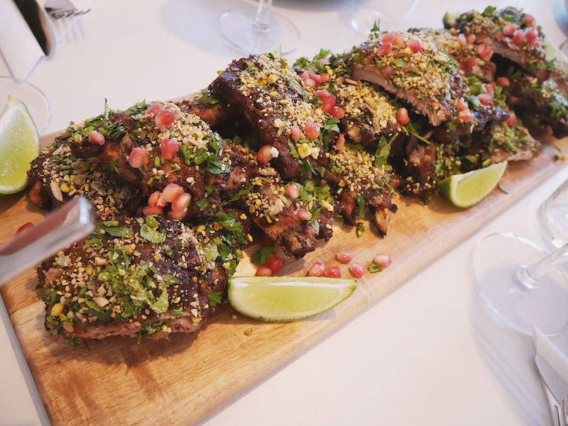

If you're looking in the alley for ribs, you're either:
looking for some damn good BBQ
a danger to society (potentially also looking for some BBQ)
Nevertheless, a friend
for the ribs:
10lbs pork side ribs
kosher salt, to taste
for the pomegranate molasses bbq sauce:
2 onions
5 jalapenos
4 garlic cloves
1 knob of ginger
4 tablespoons canola oil
2 tablespoons cayenne pepper
2 tablespoons garlic powder
2 tablespoons onion powder
2 tablespoons mace
1 tablespoon ground cloves
2 tablespoons ground coriander
3 tablespoons smoked paprika
3 tablespoons Korean chile flakes
10 pomegranates
4 tablespoons molasses
4 tablespoons maple syrup
4 tablespoons apple cider vinegar
2 cups water
To cook the ribs, place ribs in a pot with cold, heavily salted water (make it taste like the ocean) and cover. Bring to a boil, then reduce to medium heat and let simmer. Skim the scum from the top. Cook until tender, about an hour and half.
To make the pomegranate molasses barbecue sauce, heat the canola oil in a saucepan over medium. Chop onions, garlic, jalapeño, and ginger and cook in the oil until golden brown. Add the cayenne, garlic powder, onion powder, mace, ground clove, ground coriander, smoked paprika, and Korean chili flakes. Add all of the seeds and juice from the pomegranates, then add the molasses, maple syrup, apple cider vinegar, and water. Bring to a boil, then simmer for 1 hour. When cool, blend in a blender until smooth.
For the dukkah, take all the seeds and place in a blender. Blitz on pulse until crumbly. Place in a bowl and set aside.
Chop the parsley and cilantro and place in a bowl.
Heat your grill up really, really hot! Place ribs on grill and start basting with the barbecue sauce. You are gonna have to move quick here, so don't crowd the grill. Glaze ribs, flip ribs, glaze ribs, flip ribs, until nice and sticky and charred. Repeat until all ribs are cooked.
Place ribs on a nice cutting board and give them a final glaze of the barbecue sauce. Then sprinkle with the fresh-cut herbs and the dukkah. Slice the ribs into individual ribs for your guests. Add some lime wedges for a fresh hit of acid, squeeze some pomegranate juice and seeds on them, and you're done.
*AUTHOR'S NOTE: This recipe has been reprinted by permission of the author from Matty Matheson: A Cookbook.